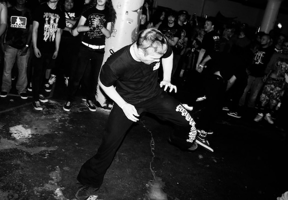

Me moshing and showing off my moves at Camp Spaceman in LouisivilleMy name is Lincoln Stephens and I am taking applied media and communications as a major. I am doing this because of my love for talking about sports and hoping to get into broadcasting. During my time here I've also realized it could get me into creative writing. Creating writing would be great for me, as a huge wrestling nerd, maybe one day I could write storylines.
To continue on about wrestling, it has been a huge part of my life for many years. I sometimes feel like a nerd saying I enjoy it because then people ask "Well isn't it just fake." Yes, it is, and so is every movie you've ever watched so lay off. I like the aspect of fighting and hitting crazy moves to win matches, it also feels like a beautiful form of art to me.
To give more information about the picture, moshing is common at hardcore shows where the music is very fast and a bunch of people will swing their arms. It can get dangerous, I got knocked out not long ago and by class time you might see a fresh cut on my nose. Even then I still love it because after the songs are over the people there are so friendly and welcoming. It's truly been a gift to be able to be in such a fun music 🎵 scene with so many people. Camp Spaceman was like a home to me all of Summer break
Lastly, I'm a big fan of MMA, I had done JiuJitsu for about 3 years before moving. I'm yet to find a place I can train at in Cincinnati but hopefully I can soon. I never really competed much but it was fun to do it multiple times a week and make good friends at practice. I often watch the UFC too since I would never profesionally fight, I just say what a guy should do from my couch as if I'm the all knowing.